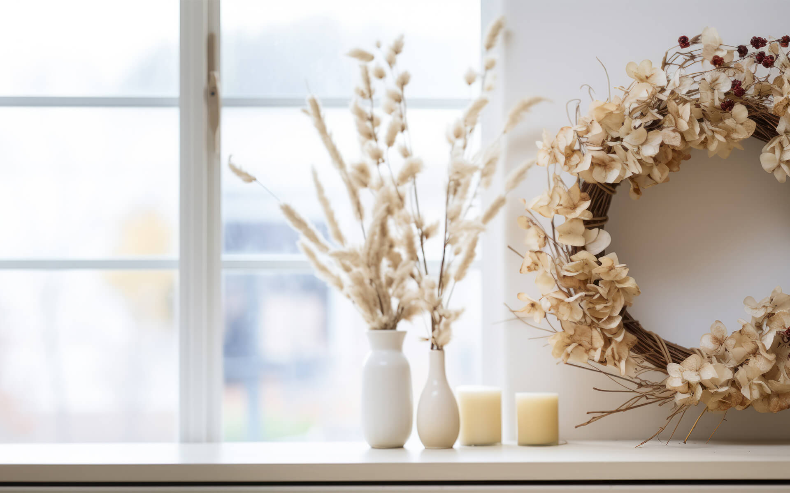

Profile
Works

ドライフラワーのある生活で暮らしを豊かに アンティークな雰囲気を持ったドライフラワーは、インテリアとして生活を彩るだけでなく香りを楽しむこともできます。 あなたの暮らしにもドライフラワーを取り入れてみませんか？
Profile 自己紹介 趣味でドライフラワー作りを始め、現在はドライフラワー作家として活動しています。 インテリアとしてだけでなく、お誕生日や記念日等、お祝い用のフラワーアレンジメントも行っています。
Works 作品一覧